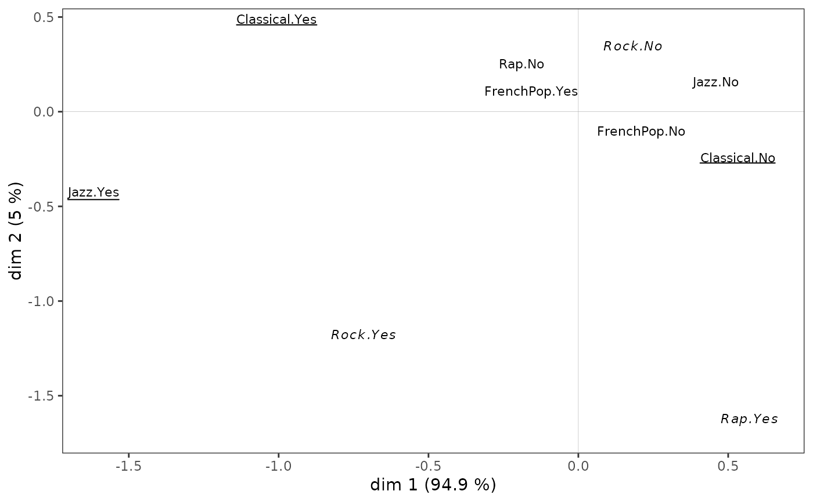
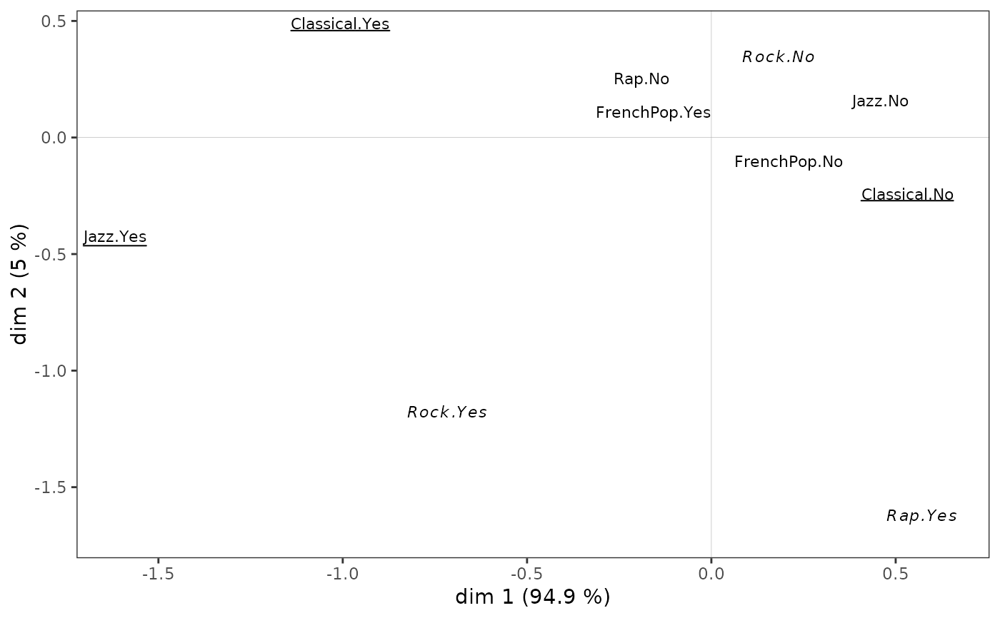

Plot of the cloud of variables
ggcloud_variables.RdPlots a Multiple Correspondence Analysis cloud of variables.
ggcloud_variables(resmca, axes = c(1,2), points = "all",
min.ctr = NULL, max.pval = 0.01, face = "pp",
shapes = TRUE, prop = NULL, textsize = 3, shapesize = 3,
col = NULL, col.by.group = TRUE, alpha = 1,
segment.alpha = 0.5, vlab = TRUE, sep = ".", legend = "right",
force = 1, max.overlaps = Inf)Arguments
- resmca
object of class
MCA,speMCA,csMCA,stMCAormultiMCA.- axes
numeric vector of length 2, specifying the components (axes) to plot. Default is c(1,2).
- points
character string. If 'all' all categories are plotted (default); if 'besth' only those who contribute most to horizontal axis are plotted; if 'bestv' only those who contribute most to vertical axis are plotted; if 'besthv' only those who contribute most to horizontal or vertical axis are plotted; if 'best' only those who contribute most to the plane are plotted.
- min.ctr
Numerical value between 0 and 100. The minimum contribution (in percent) for a category to be displayed if the
pointsargument is equal to "best", "besth" or "bestv" andresmcais of typeMCA,speMCAorcsMCA. If NULL (default), only the categories that contribute more than the average (i.e. 100 / number of modalities) are displayed.- max.pval
Numerical value between 0 and 100. The maximal p-value derived from test-values for a category to be displayed if the
pointsargument is equal to "best", "besth" or "bestv" andresmcais of typestMCAormultiMCA.- face
character string. Changes the face of the category labels when their contribution is greater than
min.ctr. The first letter refers to the first represented axis, the second letter to the second. "p" is for plain text, "u" for underlined, "i" for italic and "b" for bold. For example, "ui" means that the labels of the most contributing categories on the first axis will be underlined and the labels of the most contributing categories on the second axis will be italicized. By default ("pp"), no font face change is made.- shapes
Logical. Should shapes be plotted for categories (in addition to labels) ? Default is TRUE.
- prop
If NULL, the size of the labels (if shapes=FALSE) or the shapes (if shapes=TRUE) is constant. If 'n', the size is proportional the the weights of categories; if 'ctr1', the size is proportional to the contributions of the categories on the first dimension of the plot; if 'ctr2', the size is proportional to the contributions of the categories on the second dimension of the plot; if 'ctr12', the size is proportional to the contributions of the categories on the plane ; if 'ctr.cloud', the size is proportional to the total contributions of the categories on the whole cloud; if 'cos1', the size is proportional to the quality of representation (squared cosines) of the categories on the first dimension of the plot; if 'cos2', the size is proportional to the quality of representation of the categories on the second dimension of the plot; if 'cos12', the size is proportional to the quality of representation of the categories on the plane; if 'vtest1', the size is proportional to the test-values of the categories on the first dimension of the plot; if 'vtest2', the size is proportional to the test-values of the categories on the second dimension of the plot.
- textsize
Size of the labels of categories if shapes=TRUE, or if shapes=FALSE and prop=NULL. Default is 3.
- shapesize
Size if the shapes of categories if shapes=TRUE and prop=FALSE. Default is 3.
- col
Character string. Color name for the shapes and labels of the categories. If NULL (default), the default
ggplot2palette is used, with one color per variable.- col.by.group
Logical. If
resmcais of typemultimCA, categories are colored by group from the MFA if TRUE (default) and by variable if FALSE.- alpha
Transparency of the shapes and labels of categories. Default is 1.
- segment.alpha
Transparency of the line segment beside labels of categories. Default is 0.5.
- vlab
Logical. Should the variable names be used as a prefix for the labels of the categories. Default is TRUE.
- sep
Character string used as a separator if vlab=TRUE.
- legend
the position of legends ("none", "left", "right", "bottom", "top", or two-element numeric vector). Default is right.
- force
Force of repulsion between overlapping text labels. Defaults to 1. If 0, labels are not repelled at all.
- max.overlaps
Exclude text labels that overlap too many things. Defaults to Inf, which means no labels are excluded.
Value
a ggplot2 object
Note
If col argument is NULL, shapes or labels are colored according to the variables, using the default ggplot2 palette. The palette can be customized using any scale_color_* function, such as scale_color_brewer(), scale_color_grey() or scale_color_manual().
If resmca is of type stMCA or multiMCA and points is not equal to "all", test-values are used instead of contributions (which are not available for these MCA variants) to select the most important categories ; if points is equal to best, only categories with high test-values for horizontal axis or vertical axis are plotted.
References
Le Roux B. and Rouanet H., Multiple Correspondence Analysis, SAGE, Series: Quantitative Applications in the Social Sciences, Volume 163, CA:Thousand Oaks (2010).
Le Roux B. and Rouanet H., Geometric Data Analysis: From Correspondence Analysis to Stuctured Data Analysis, Kluwer Academic Publishers, Dordrecht (June 2004).
See also
Examples
# specific MCA of Music example data set
data(Music)
junk <- c("FrenchPop.NA", "Rap.NA", "Rock.NA", "Jazz.NA", "Classical.NA")
mca <- speMCA(Music[,1:5], excl = junk)
# cloud of variables
ggcloud_variables(mca)
 # cloud of variables with only categories contributing the most
ggcloud_variables(mca, points = "best", prop = "n")
# cloud of variables with only categories contributing the most
ggcloud_variables(mca, points = "best", prop = "n")
 # cloud of variables with other plotting options
ggcloud_variables(mca, shapes = FALSE, legend = "none",
col = "black", face = "ui")

# cloud of variables with other plotting options
ggcloud_variables(mca, shapes = FALSE, legend = "none",
col = "black", face = "ui")
